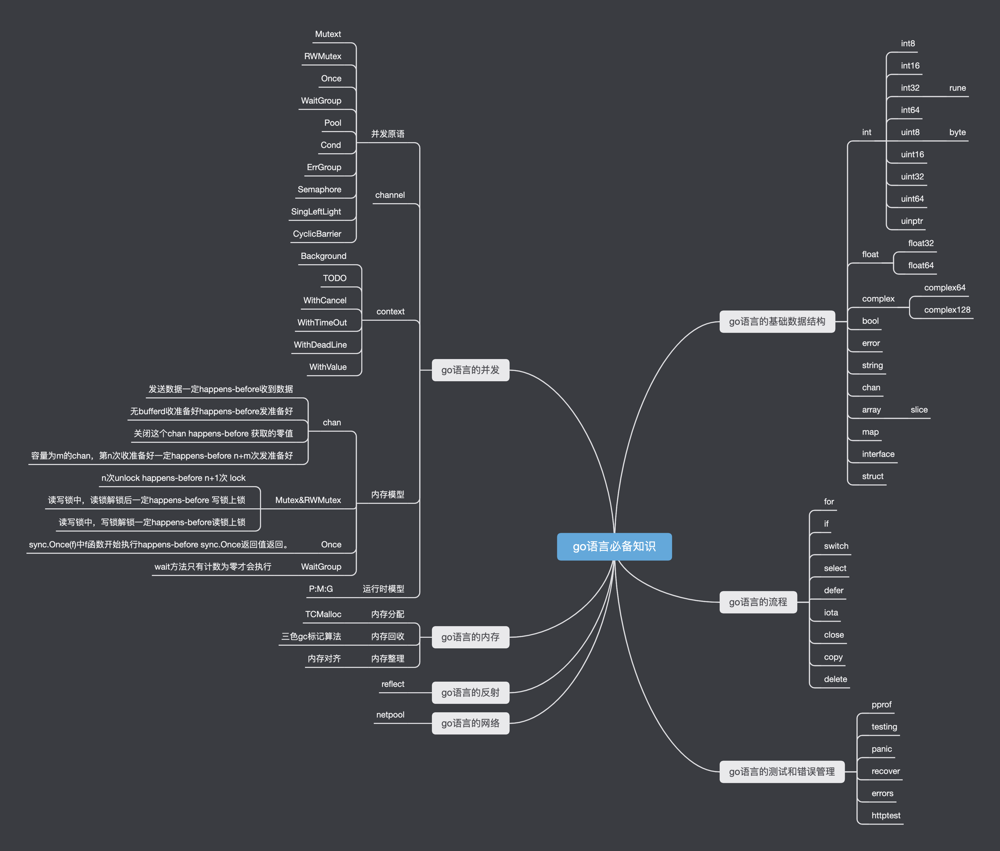

GOFamily
go语言从入门到熟练
作者@科科人神
导图
国内访问可能无法访问到图片，可以添加微信公众号：
科科人神，回复：go思维导图获取，另外回复go-book可获得本教程。

- go语言的基本语法
- go语言高级用法
- go语言的标准库用法
关注我
- 头条@科科人神

- 微信公众号@科科人神

- b站@科科人神
作者的计算机知识项目
- foolon : 从零开始学习分布式系统
- GOFamily :go语言从入门到熟练掌握
- 408Family : 算法和数据结构,设计模式，正则表达式，网络，操作系统，计算机组成原理
- DBFamily : 从零开始学习数据库知识
- study-k8s-docker : 从零开始学习k8s和docker等容器化的知识
- hi-test :从零开始学习关于软件测试，性能测试，软件工程的知识
- up : 从初级程序员向高级程序员迈进 --- 系统调优公开课
- repairman :程序员的必修课 --- 线上紧急故障排除
- Refactor : 高级软件工程师的必修课 -- 如何进行代码重构
- coder : 关注程序员的职业发展，会分享比如如何升迁，如何面试，如何赚钱等知识。